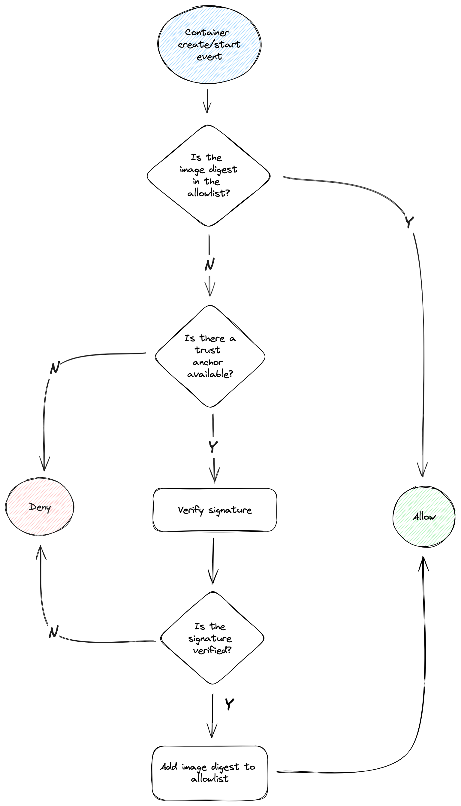
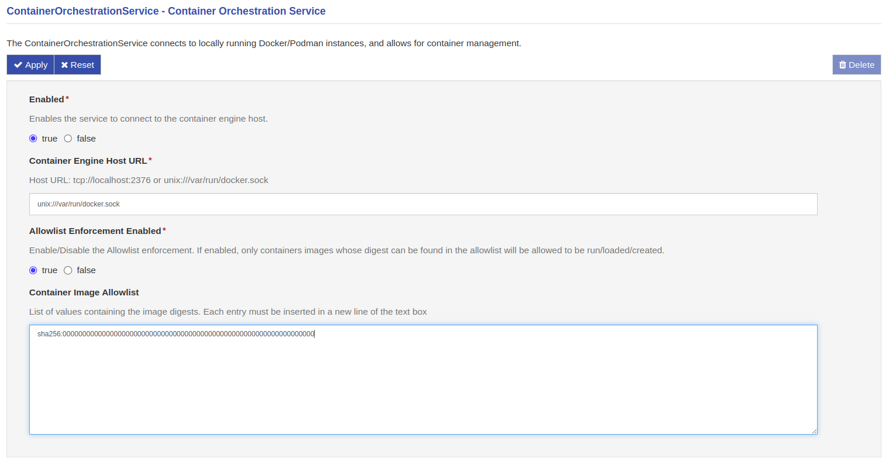
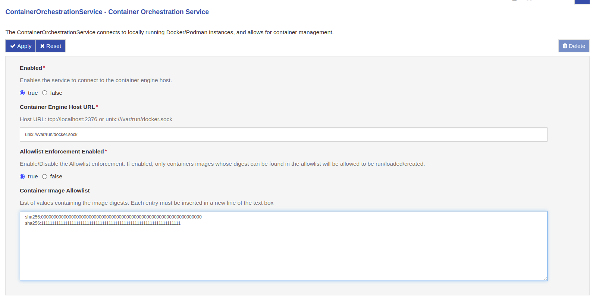
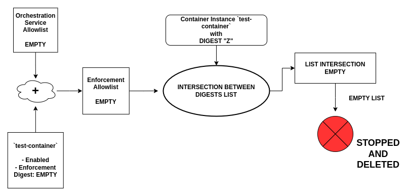
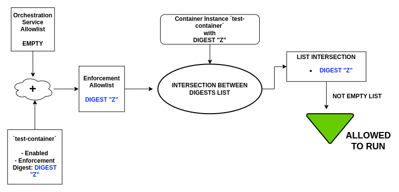
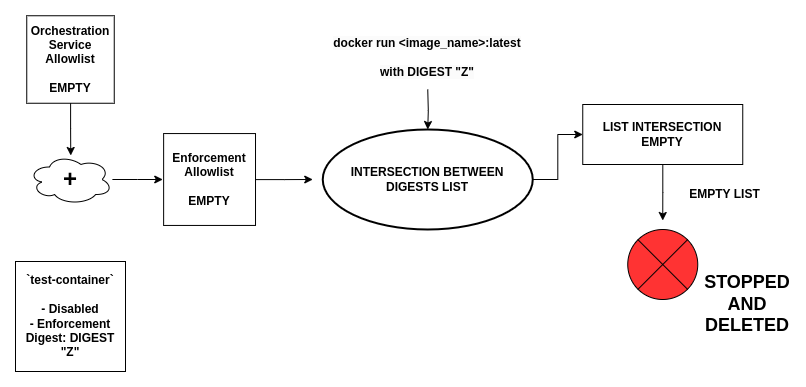
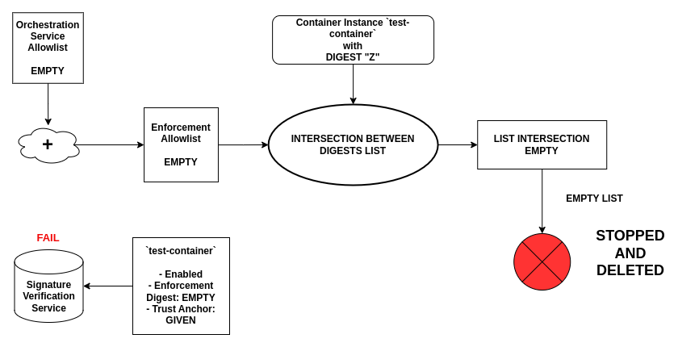
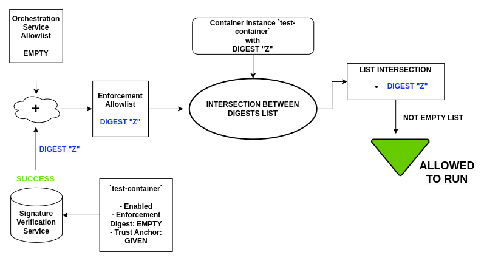

Eclipse Eclipse Kura Container Image Authenticity and Allowlist Enforcement feature
Containerized applications are becoming increasingly popular in the software ecosystem as a way to deploy and distribute applications. As a result, ensuring the security of software supply chains has become a critical concern. Implementing best practices, such as signing and verifying images to mitigate man-in-the-middle (MITM) attacks and validating their authenticity and freshness, play a pivotal role in safeguarding the integrity of the software supply chain.
To ensure the authenticity and integrity of the code within the container images, binding the image to a specific entity or organization via signature verification is crucial and increasingly common.
The purpose of this document is to provide a high-level understanding of the Eclipse Kura container authenticity and allowlist enforcement feature introduced with Eclipse Kura version 5.5.0.
High-level flow
The Eclipse Kura container authenticity and allowlist enforcement feature is designed to address container authenticity concerns by providing a mechanism to perform the signature verification of container images and restricting which container images can be deployed on the Eclipse Kura instance.
This is achieved by implementing the following flow:

Description of the flow:
- Monitoring: Eclipse Kura monitors the container engine events. When a "container start" event is triggered it intercepts the information regarding the image used to spin up the container and starts performing the container authenticity checks.
- Allowlist: Firstly, it checks if the digest of the image used to run the container can be found in the Eclipse Kura allowlist. If so, the container is allowed to run. If not, Eclipse Kura proceeds with the image signature verification.
- Signature verification: If no trust anchor (i.e. a public key or a X509 certificate depending on the signature mechanism) is available for the verification process to happen, the container is not allowed to run. If one is available, the image signature is verified and the allowlist is updated accordingly.
This flow applies to both containers managed by Eclipse Kura itself and containers ran directly by the user via CLI, allowing for a fine-grained control over the container images that can be deployed on the Eclipse Kura instance.
- Unmanaged containers: Eclipse Kura allows the user to define a list of container images that can be deployed on the platform. This is done by adding the image digests to the allowlist. When a container is started, Eclipse Kura checks if the image digest is in the allowlist and, if so, allows the container to run. This is meant to be used by users who, for any reason, need to run a container outside the Eclipse Kura framework but still want the safety guarantees provided by pinning the images to a specific digest.
- Managed containers: For containers ran by the framework, Eclipse Kura also allows the user to provide a trust anchor to be used for the signature verification process. This allows the user to use a mutable tag when specifying the container image, without giving up the required authenticity checks. Once the image is verified, its digest is stored within the Eclipse Kura allowlist, permitting it to be ran both from Eclipse Kura and the CLI without the need for an Internet connection. When a new image is published, the user can simply trigger the pull. The verification process will update the digest automatically.
Note that the user can still directly provide an image digest when running an Eclipse Kura-managed container. This will prevent the Eclipse Kura automatic signature verification process to run. This feature is meant to be used when:
- the user already ensured the image authenticity and does not want to go through the verification process again
- the image was not signed but the user still wants the enforcement trust guarantees provided by Eclipse Kura
Unmanaged containers
Regarding the containers not managed by Eclipse Kura, the Container Orchestration service provides a security feature which enforces the containers allowed to run on the system. This feature can be enabled or disabled through the Allowlist Enforcement Enabled option.
This mechanism leverages the concept of digest, which is a unique and immutable identifier for a container image: it is therefore an excellent mean to identify the image from which a container was created.
Given the above, Eclipse Kura allows the user to provide a list of container image digests in the Container Image Allowlist field, in the form of newline-separated strings: when a container is started on the host system (whether it is launched by Eclipse Kura or by a terminal CLI), Eclipse Kura retrieves the image from which the container was created, extracts the digest and verifies that it is present in the allowlist provided during service configuration.
If the image digest is present and matches the container's one, it is then allowed to run without interference. Otherwise, it is immediately stopped and deleted from the host system.
A similar behaviour is performed at Eclipse Kura startup or when the enforcement is enabled at runtime: if there are already containers on the device (whether they are started or stopped) and the enforcement is activated, Eclipse Kura extracts the digests from the containers and compares them with those in the allowlist. Containers that have been created from images whose digests are in the allowlist will be left running, otherwise they will be stopped and deleted from the descriptors list.
The verification is performed by intersecting the list of digests extracted by the containers and the one provided in the configuration: in this way, an empty intersection will result in a failing verification, while a non-empty one means that the image digests is equal to one of the allowlist entries.

Example scenarios
A user wants to leverage the container enforcement in order to let only docker containers started from an image named foo_image to be run on the device. To do this, they should enable the Container Enforcement by setting the Allowlist Enforcement Enabled to true, and fill the Container Image Allowlist field with the digest of the foo_image docker image (i.e.sha256:0000000000000000000000000000000000000000000000000000000000000000 in the example below).

Startup of the Enforcement Feature
Let's suppose that on the device there are already two containers running, one created from the foo_image an one from an image named unwanted_image with digest sha256:9999999999999999999999999999999999999999999999999999999999999999. Once the enforcement starts with the configuration previously described, it extracts the digests of both containers and checks if they're included in the provided allowlist: in this case, the container originating from the foo_image will be allowed to run, while the one created from the unwanted_image will be stopped and deleted, because its digest is not included in the allowlist.
The same happens also for already stopped containers: if the digests is verified, they'll be left in the descriptors list in the Stopped state, otherwise they'll be deleted.
Running Container After Enforcement Feature Startup
After the starting phase just described, Eclipse Kura will continuously monitor the activity of the docker engine. Whenever a container is started on the device, it will check the image digest from which the container was created, comparing it to the ones inside the allowlist: if the container is created from the foo_image docker image, it will be allowed to start, otherwise it will be stopped and deleted. If the user wants to add more than one allowed image, for example one named wanted_image with digest sha256:1111111111111111111111111111111111111111111111111111111111111111), it just needs to add it to the newline-separated list.

Managed containers
As explained in the previous section, Managed Containers (i.e. org.eclipse.kura.container.provider.ContainerInstances) support Container Signature validation. To do so a new API has been introduced: the ContainerSignatureValidationService.
Currently, there are three main mechanism for container signature verification:
- Docker Content Trust (DCT) a.k.a. Notary V1
- Notation a.k.a. Notary V2
- Sigstore's Cosign
This newly introduced service allows Eclipse Kura to have multiple different Services implementing this interface and, thus, support all major signature mechanisms. A reference implementation for the ContainerSignatureValidationService is the DummyContainerSignatureValidationService available in Kura examples folder for anyone wanting to implement an alternative ContainerSignatureValidationService.
When a ContainerSignatureValidationService is installed on Eclipse Kura, it gets automatically registered among the available validators and will be used to perform the signature validation. Under the hood, the ContainerInstance has a list of the available ContainerSignatureValidationService providers that, upon receiving a configuration update, it interrogates to check whether the requested container image is authentic using the provided Trust Anchor.
- If even only one service reports the signature as valid, the image signature is considered valid.
- If none of the available services reports the signature as valid, the image signature is considered not valid.
This means that Eclipse Kura doesn't need to prompt the user for selecting the correct ContainerSignatureValidationService when performing the check.
Once the image signature is validated, the image digest is stored in the Eclipse Kura snapshot and added to the ContainerOrchestratorService allowlist (see section above). A container whose image digest is available in the allowlist won't be validated again, therefore after the initial check, the internet connection is no longer required for it to work.
Example Scenarios
Container Instance Digest
Let's suppose to have a device on which Eclipse Eclipse Kura is running with the Container Orchestration Service enabled, its Enforcement feature disabled and a Container Instance named test-container up and running on the system.
A user wants to activate the Enforcement feature, so it enables the Allowlist Enforcement Enabled option in the Container Orchestration Service, but leaves the Container Image Allowlist option blank because it wants that no containers are started outside the framework.
As the feature starts, it checks all the container running on the device, including the test-container, which will be stopped and deleted: this happens because the container digest is not included in the Container Orchestration Service Allowlist and the Container Instance is not providing any information through its Container Image Enforcement Digest option.

In order to allow the Container Instance, the user should provide the correct digest in the instance settings. Let's suppose that the digest of the image from which the container is created is sha256:0000000000000000000000000000000000000000000000000000000000000000 and that the user fills the corresponding option with it: once the Container Instance is updated, the provided digest is included in the Enforcement feature allowlist, so the container will be allowed to run without interference. This case can be summarised as:

Once the instance digest is added to the enforcement feature, it can be used also to authorise container run by the Command Line Interface, or other instances on Eclipse Eclipse Eclipse Kura without providing the digest option. But what happen if the Container Instance is disabled? The aim of the Container Instance Enforcement Digest is to be used as an authorization method of the instance itself: this means that its digest is added to the enforcement feature allowlist only if the instance is enabled.

As it can be seen from the image, the merged Enforcement Allowlist box doesn't contain the digest associated to the Container Instance, because, being it disabled, the corresponding digest is ignored. If the enforcement is enabled and a container with digest DIGEST Z is started, it will then be stopped and deleted, because its digest won't be included in the allowlist.
Finally, everytime a Container Image Enforcement Digest option is modified, or the ContainerInstance is disabled or deleted, the enforcement feature will perform a check on all the already running containers. This is done because, if the digest that was previously provided has changed after an instance update, or removed due to disabling or deleting the instance, those containers that were previously authorised by this digest are no longer allowed to run. So they must be stopped and deleted.
Warning
The digests provided through Container Instances allow running also container started by the CommandLineInterface or by other Container Instances in the framework, even without providing the digest.
It has to be considered that, if the ContainerInstance is disabled (or its digest option changes), the enforcement feature will stop and delete the containers that are no longer matching the provided digest.
The user needs to be careful, then, to rely only on the digests set in the ContainerInstances options. If the user will need to run containers from the CLI, it is preferable to use the allowlist of the Container Orchestration Service. For the Container Instances, is a good practise to provide a digest.
Container Signature Verification
If the Container Image Enforcement Digest option is not provided, Eclipse Eclipse Kura will proceed with the Signature Verification: this process tries to extract the digest of the image from which the container was started.
Let's then suppose that we are back at the beginning of the previous example, with a blank Container Orchestration Service allowlist and a not given Container Instance Digest, but this time a Trust Anchor option is given: in this case Eclipse Eclipse Kura will start the Signature Verification Process, in order to extract the digest.
If, for whatever reason, the Signature Verification fails, no digests will be added to the allowlist: if the enforcement feature is enabled, the started container will be then stopped and deleted by the Enforcement Monitor, because no digests are included in the final Enforcement Allowlist.

While, if the procedure completes correctly, the extracted digest will be added to the Enforcement Allowlist and written in the snapshot: in this way the container will pass the enforcement feature check, and the obtained digest will be stored as part of the Container Instance's configuration just started.

If the user wants to check again the digest through the Signature Verification Service, it just needs to erase the Container Image Enforcement Digest option from the configuration of the Container Instance: in this way the Signature feature will be triggered again and the digest recalculated.
Warning
Even in this situation, the digest could be used to authenticate container started from the CommandLineInterface: also in this case keep in mind that if the Container Instance is disabled, stopped or updated with different digest, those CLI-based container could be stopped and deleted.